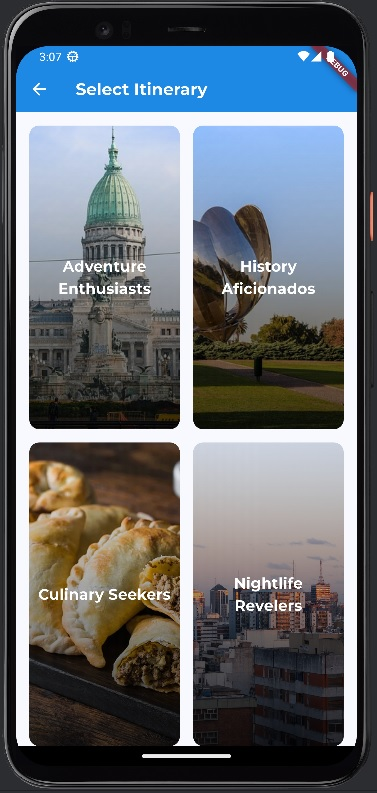
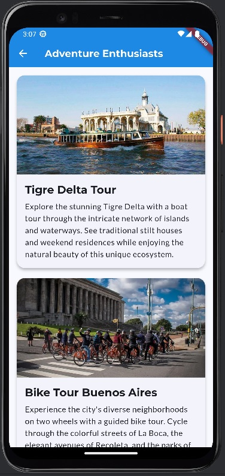
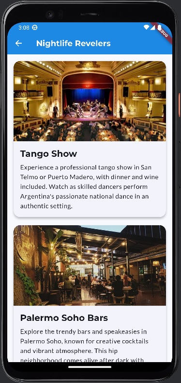
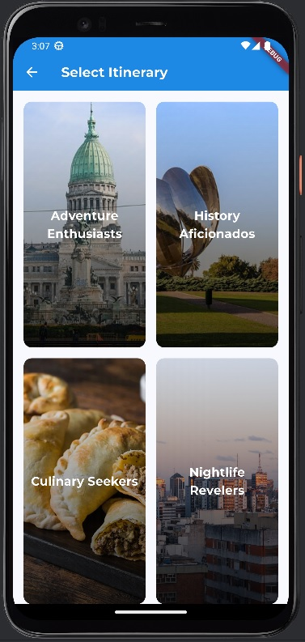
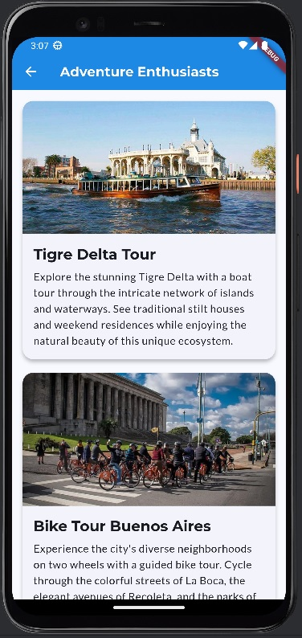
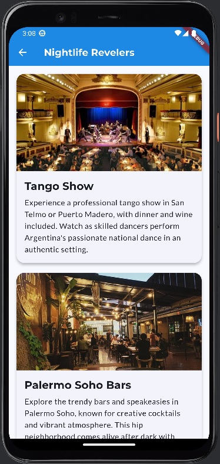

My Projects
 





Buenos Aires Travel Itinerary App
A Flutter mobile application that guides tourists through one-day itineraries of Buenos Aires, Argentina. The app features an engaging welcome screen, category-based itinerary selection in a 2x2 grid layout, multiple activity suggestions for different traveler types, and a responsive design that works across all screen sizes.
View ProjectDear Diary App
A journaling application using the Model View Controller (MVC) design pattern that allows users to log their days with 140-character descriptions and 1-5 star ratings. The app includes features for downloading diary entries as PDF files, a statistics view that displays average star ratings for each month, and the ability to edit/ delete existing entries.
View ProjectAlien Protocol
Built a 2D game in C++ using SFML and ImGui, creating a custom engine with features like collisions, ray casting, gravity, and NPC pathfinding. The game includes weapons, items, inventory and shop mechanics, dynamic progression, shaders, and a fully built level editor. Integrated visuals animations, shaders, audio, and parallax to enhance the experience.
View ProjectStock Market Simulation
Web-based stock trading simulation featuring server-side functionality and a dynamic browser-based HTML frontend. Utilizes an external API to retrieve real-time stock information for executing trades.
View ProjectMachine Learning Projects
Machine learning projects involving classification, regression, and image recognition. These included using KNN and cross-validation for label discrimination, developing regression models with scikit-learn, and optimizing binary classifiers with grid search. Completed a TensorFlow image classification project with the Fashion MNIST dataset, modifying code and presenting results.
View Project